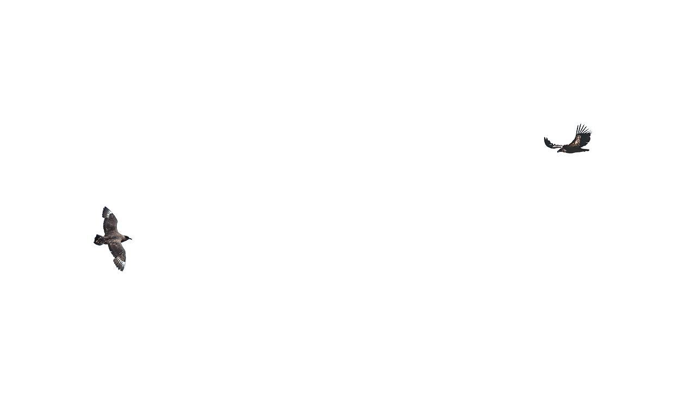
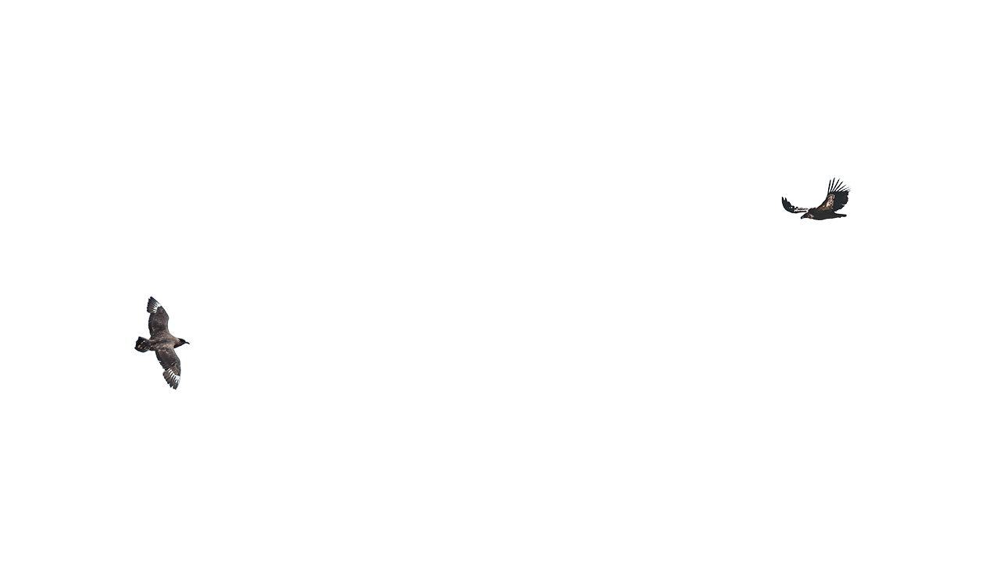
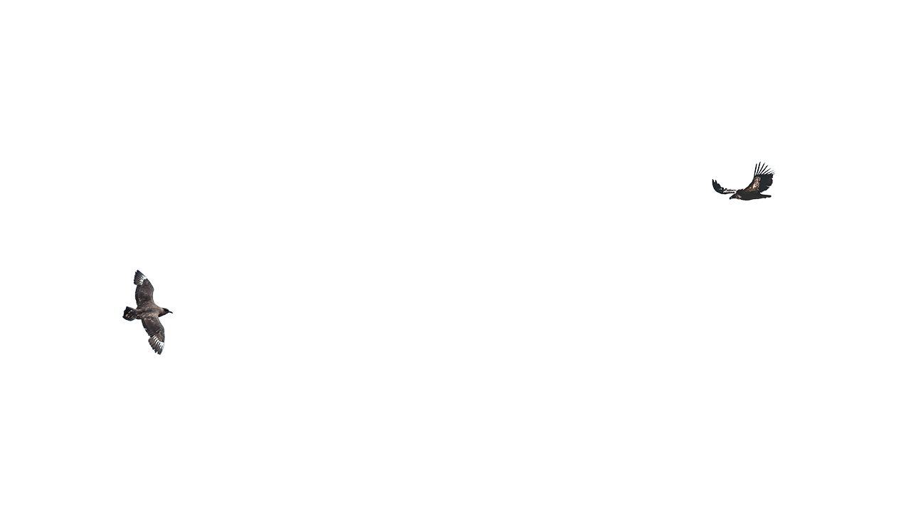
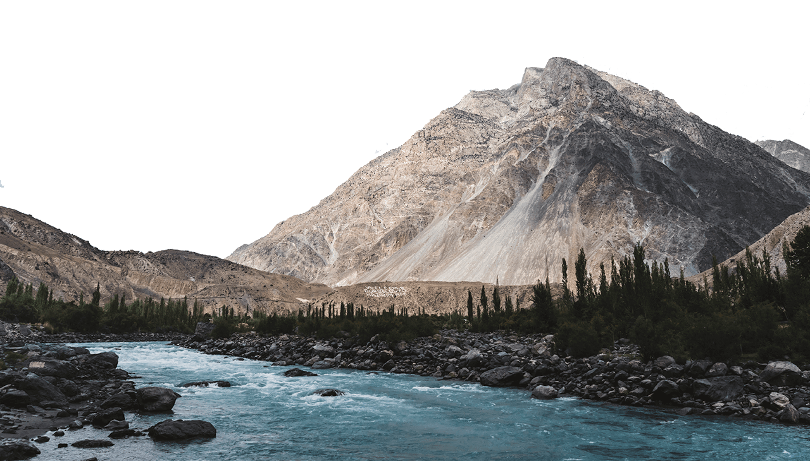
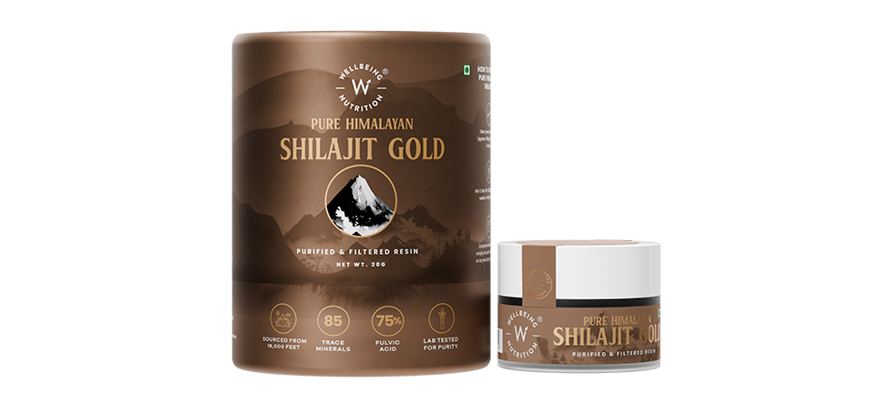
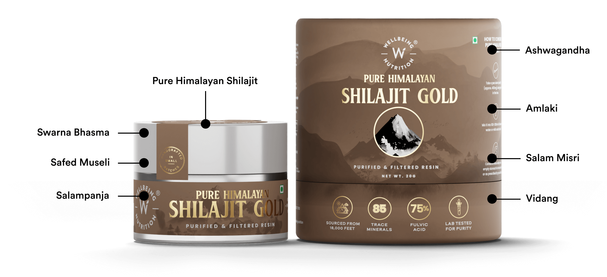
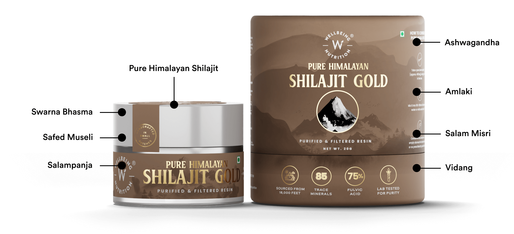

India's 1st Clinically
Researched Shilajit


 



Sourced from 18,000 Feet of the Annapurna Range of the Himalayas
Known as the 'destroyer of weakness,' Shilajit is a natural and classical Ayurvedic remedy for boosting energy, increasing endurance, and elevating vitality.
 Trusted Ingredients
for Proven Results!
 

200
85
Trace Minerals
75%
Fulvic Acid

LAB tested for purity

Shilajit begins its journey to you high in the Annapurna range of the Himalayas, seeping from mountain rocks over centuries. Meticulous manufacturing refines the raw resin through filtration, extraction, and blending - each step ensures this timeless natural substance is harnessed in its purest, most potent form.

So pure you can trust it with closed eyes! Every bottle comes with an exclusive lab-tested certificate - your assurance of excellence with every purchase!
your content
your content
your content